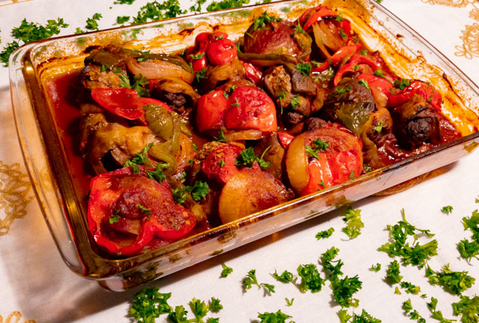

Tebsi

Description
This dish is a Moroccan dish I learned from my mother, whenever I buy aubergines in the store it's for this dish!
Ingredients
- One or two aubergines
- Ground beef(chicken works but I would use ground beef)
- Tomato paste
- Two onions
- Tomato sauce, crushed or pressed works
- Garlic 4-5 cloves
- If you want a sweeter taste, red wine vinegar
Spices:
- Salt
- Pepper
- Cumin
- Curry
- Tumeric
How to:
- Start off by slicing the aubergines into 1 cm thick slices, after that use a brush dipped into olive oil to paint both sides.
- After brushing the aubergine with olive oil, salt them and put them into the oven at 200C until they brown
- Cook the